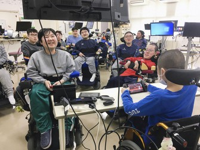

Yakumo Hôpital National
L'hôpital Yakumo n'est pas un hôpital comme les autres. Cet hôpital offre la possibilité à leurs patients paraplégiques de pouvoir jouer aux jeux vidéos. Les patients utilisent différents dispositifs en fonction du type de leur handicap.
Une équipe de patients paraplégiques face à une équipe de joueurs de haut niveau
Kentaro Yoshinari âgé de 23 ans a une mobilité réduite dû à un sérieux trouble musculaire, mais il fait parti des meilleurs joueurs de l'hôpital. Il joue simplement avec un son bout de doigt. Lui et son équipe ont joué face à une équipe de joueurs de haut niveau de League of Legends. Malgré leurs handicaps, les joueurs de l'équipe paraplégique ont réussi à vaincre le chef de l'équipe adverse. Cependant l'équipe adverse était bien plus forte et ils ont perdu face à l'équipe adverse. Depuis ce jour, Kentaro et son équipe s'entraînent tous les jours pour qu'un jour, ils puissent gagner face à d'autres équipes de haut niveau.
EDF favorise l'accès au Esport
Engagé depuis 1992 dans le sport et son accessiblité à tous, EDF a organisé plusieurs animations dans le but de sensibiliser le public sur l'accessibilité dans le monde de l'Esport pour tous. En s'engageant sur la promotion de la zone Handi'Cap sur le Gaming lors de la Gamers Assembly en 2018, ces moments de partage et d'échange auront servi notamment à récolter des dons pour divers associations en lien avec le handicap grâce à l'organisation d'un show. Un espace jeu a été ouvert où chacun a incarné le rôle d'un chevalier aveugle guidé uniquement par la voix de sa fille, et une présentation de différents supports utilisés par les personnes en situation de handicap pour jouer a été animée.
Five’s TV – Le handicap fait la force !
Five's TV est une association fondée par Mr Five en 2015 dans le but de favoriser la mixité faible mais grandissante des femmes et des hommes en situation de handicap dans le monde compétitif du jeu vidéo. Etant lui-même un joueur porteur d'un handicap qui le prive d'une main, Mr Five a cherché à concilier sa passion pour le jeu avec ce handicap. Cette association a permis de créer une communauté de joueurs, à constituer des équipes Esport et organiser des événements communautaires. Cette association a permis à des joueurs hésitant de se lancer dans l'Esport à franchir le pas. Le handicap fait la force, c'est sa devise. Sa situation ne l'a pas affaibli, au contraire : ça l'a motivé à prouver qu'il était capable de jouer comme les autres, si ce n'est mieux, et qu'il a sa place dans le monde de l'Esport comme n'importe qui d'autre.